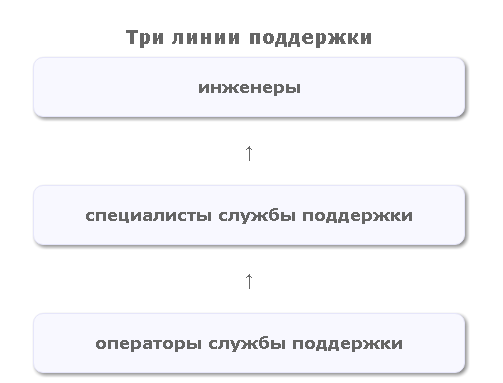
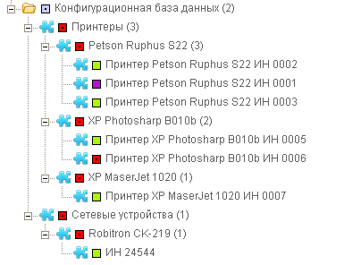

|
<< Click to Display Table of Contents >> Navigation: Rus > Примеры конфигураций для TrackStudio 4.0 > Конфигурация TrackStudio для IT Service Management / Helpdesk. |
TrackStudio Service Desk - это конфигурация для управления ИТ услугами (IT Service Management), построенная на основе библиотеки ITIL v3. Вы можете использовать эту конфигурацию с TrackStudio Enterprise версий 5.0.3 и выше.
В данной конфигурации реализованы следующие процессы ITIL:
•Управление инцидентами
•Управление конфигурациями
•Управление проблемами
•Управление запросами на изменения
•Управление базой знаний (управление временными решениями)
•Частично реализовано управление SLA

Разделение по линиям поддержки позволяет распределить задачи по сложности между всеми членами команды в зависимости от их квалификации. Инциденты регистрируются операторами службы поддержки. Далее они решаются, а если решение не может быть найдено, то инциденты передаются специалистам службы поддержки. Специалисты службы поддержки пытаются решить проблему и передают ее в случае необходимости инженерам. Инженеры занимаются только решением наиболее сложных и серьезных задач.
Инцидент — это любое событие, не являющееся частью стандартных операций по предоставлению услуг, которое повлекло или может повлечь прерывание или снижение качества этой услуги. В некоторых интерпретациях ITIL рассматривают частный случай инцидента — запрос на обслуживание (Service Request) — запрос от пользователя на поддержку, предоставление информации, консультации или документации, не являющийся сбоем ИТ-инфраструктуры. Можно считать, что если пользователь не может продолжать работу с поддерживаемым конфигурациями без предоставления дополнительной информации от службы поддержки — это является сбоем, то есть полноценным инцидентом. Поэтому решать такие «запросы на обслуживание» нужно точно так же, как и обычные инциденты: предлагать пользователю временное решение (если оно существует), регистрировать проблему, и создавать запрос на изменение документации или пользовательского интерфейса. Итак, в рамках TrackStudio Service Desk мы считаем инцидентом любое обращение пользователя в службу поддержки. Работа службы поддержки должна быть направлена в том числе и на уменьшение количества подобных обращений.

Конфигурационная база данных хранит не только информацию о составе ИТ-инфраструктуры, но и о связях между конфигурационными элементами. Глубина конфигурационной базы данных определяется степенью детализации конфигурационных единиц. Так, например, можно хранить информацию о рабочем месте в целом, либо детализировать ее до уровня клавиатур, мышей и мониторов. При использовании TrackStudio Service Desk вы можете самостоятельно задавать степень детализации конфигурационных единиц и, при необходимости, менять ее.
Ключевая особенность TrackStudio — иерархическая организация задач с бесконечным уровнем вложенности. Это позволяет поддерживать конфигурационную базу данных (CMDB) любого уровня детализации, а поддержка независимых и гибко настраиваемых процессов (workflow) позволяет реализовать все процессы, описанные в ITIL.
Цель процесса управления проблемами — установить корневую причину возникновения инцидентов, предложить временное решение и, если требуется, создать запрос на изменение с целью устранить причину возникновения проблемы. Деятельность в рамках процесса управления проблемами направлена на уменьшение количества инцидентов и сокращение издержек на поддержку продукта или услуги.
Для проблем определено три уровня приоритетов: Высокий, Нормальный и Низкий. До предложения временного решения при обработке проблем следует руководствоваться не приоритетом, а сроком решения инцидента, который переводится в поле «Сделать до» проблемы при ее создании.
Запросы на изменения возникают как результат процесса управления проблемами, но многие изменения могут появляться в результате упреждающих действий, направленных на уменьшение затрат на поддержку или улучшение услуг. Цель управления изменениями — определение и проведение процедур для минимизации негативного воздействия на поддерживаемые продукты или услуги связанных с изменениями инцидентов.
Для работы конфигурации вам понадобится TrackStudio версии 5.0.3 и выше.
•Скачать конфигурацию ITSM v. 1.2.2
Ниже описана процедура установки конфигурации для TrackStudio Standalone.
1.Запустите TrackStudio Enterprise Server Manager (sman.exe для Windows, sman для GNU/Linux).
2.Распакуйте скачанный с сайта архив, конфигурации БД находятся внутри архива.
3.Выберите «Русский» в меню File→Language, если отображаются надписи на английском языке.
4.В меню нажмите кнопку «Создать БД». В появившемся окне выберите «Создать базу данных на основе файла экспорта» и нажмите кнопку «ОК».
5.Выберите файл базы данных itsm-db-demo.zip (или itsm-db-clean.zip)
6.После того, как база данных будет создана, скопируйте архив itsm.jar в папку etc/plugins/scripts вашего экземпляра TrackStudio.
7.Нажмите кнопку «Старт», чтобы запустить сервер TrackStudio.
8.Когда сервер запустится, нажмите кнопку «Открыть в браузере».
9.Зайдите в систему как HDAdmin с паролем «root». Смените пароль и почтовый адрес этому пользователю.
Если у вас уже установлена и используется любая предыдущая версия конфигурации ITSM, вы можете обновить ее. Для обновления вам понадобится файл itsm.jar с сайта TrackStudio. Файл базы данных при обновлении не используется.
Текущую версию скриптов всегда можно получить из репозитория на github. Собираются скрипты командой
ant build
1.Скопируйте архив itsm.jar в папку etc/plugins/scripts вашего экземпляра TrackStudio.
2.Запустите TrackStudio.
3.Зайдите в систему как HDAdmin с вашим паролем.
4.Перейдите к списку задач и отметьте флажок напротив задачи #50 Инциденты.
5.Внизу списка в выпадающем поле выберите скрипт Upgrade.class и нажмите «Применить».
6.В процессе обновления в окне логов Server Manager будут выводиться информационные сообщения. Также там могут появляться сообщения об ошибке CantFindObjectException — это нормально.
7.Перезапустите TrackStudio.